Home


Remote Repositories
Making a Remote Repository
To create a remote repository and link it to our local. Go to GitHub sign in and click on your repositories.
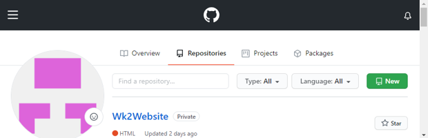Click New.
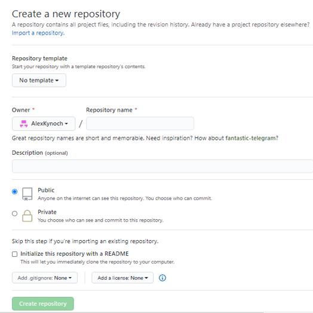Give it a name, description choose public or private etc you can choose to add a README file if you want this is a place to store details of what your repository is about for anyone who uses it.
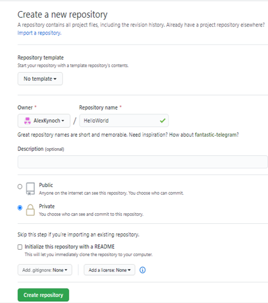Click create repository.
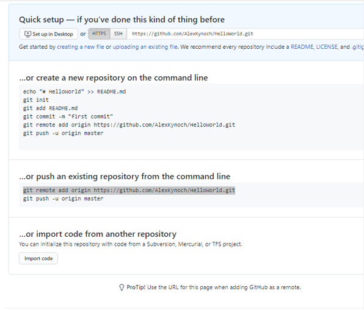Copy the highlighted link and go back to bash.
Adding a Remote Repository to your project
git remote lists the remote repositories.
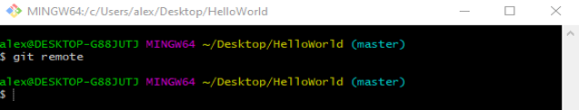There are no remote repositories to add the new one we just made paste the highlighted line into bash
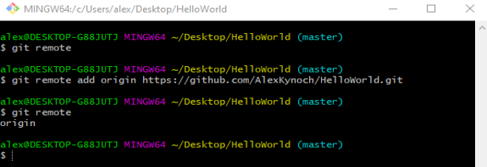Now we have added our remote repository to git and it is called origin. Now copy and paste the next highlighted line into bash.
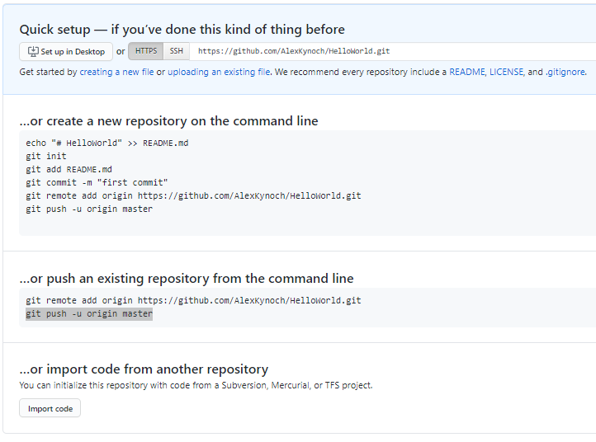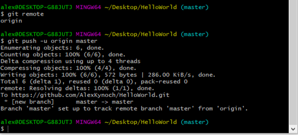
This pushes everything to the new repository when you refresh GitHub all your files should be there.
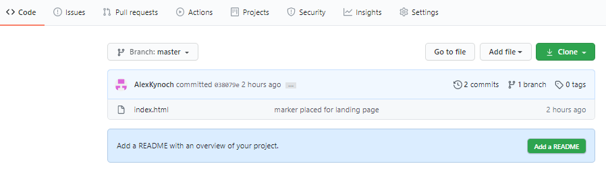Adding new content
Index.html is now in the remote repository. If we add a new file
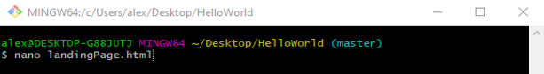Add content to it.
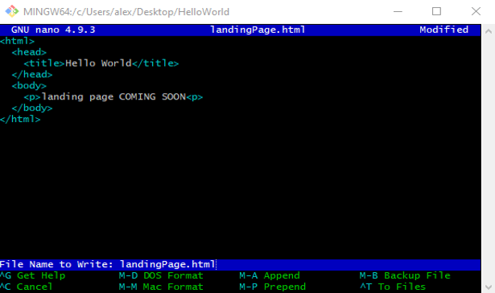Its not tracked. (Probably should have done this in a feature branch you can find out all about branches on the branches page).
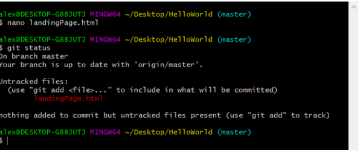git add . to stage it, now it is being tracked and git commit.
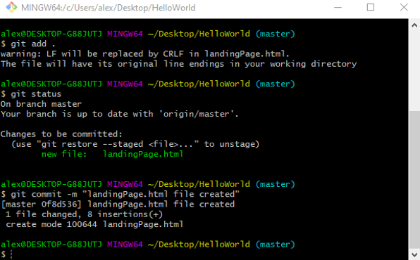Pushing to GitHub
The new file landingPage.html is saved but only to our local repository to send it to the remote repository we need git push.
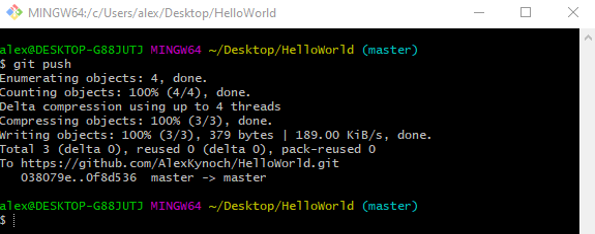This pushes everything to our remote repository in GitHub and we can see it when we refresh.
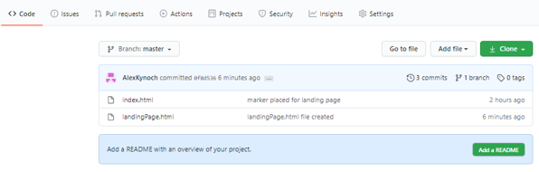To check if everthing is up to date we can do git pull.
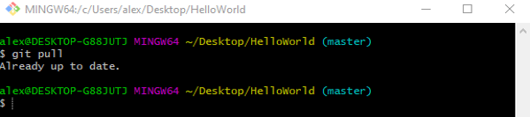Everthing is up to date but if someone else had made changes committed them and pushed them to the remote repository and we did a git pull it would bring us all the latest changes.
Now if we accidentally deleted .git it wouldnt be so bad as we have saved a copy of all our files to GitHub. (This statement is true as long as we dont change anthing).